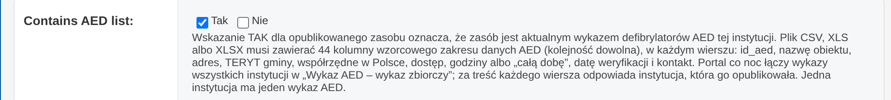
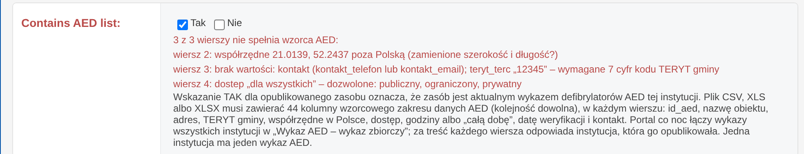
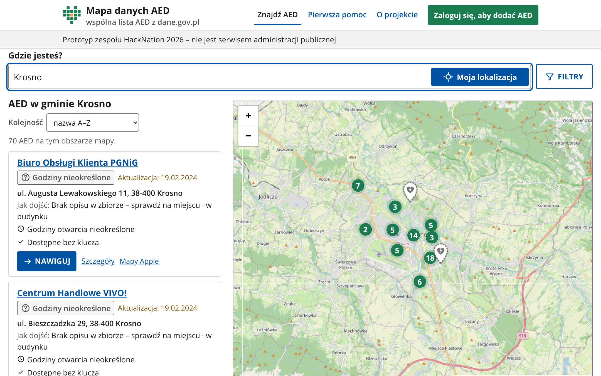
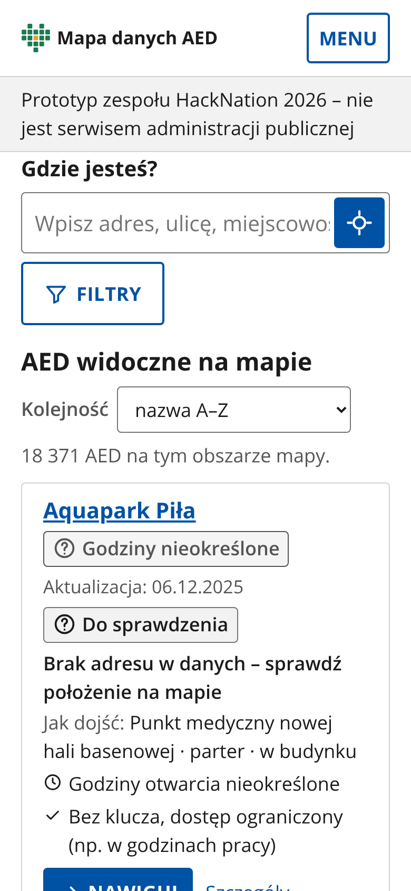
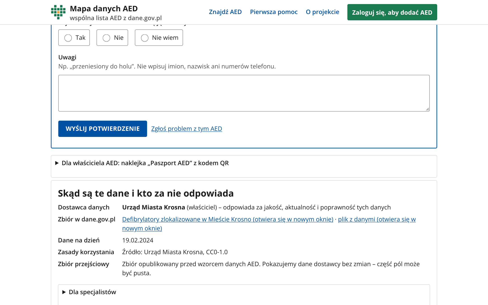
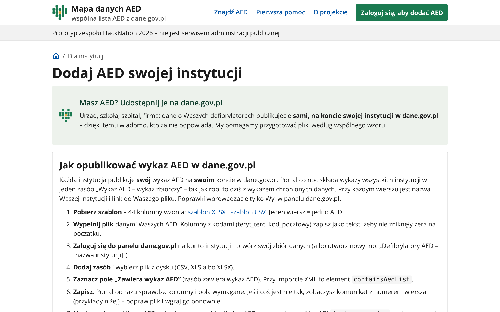
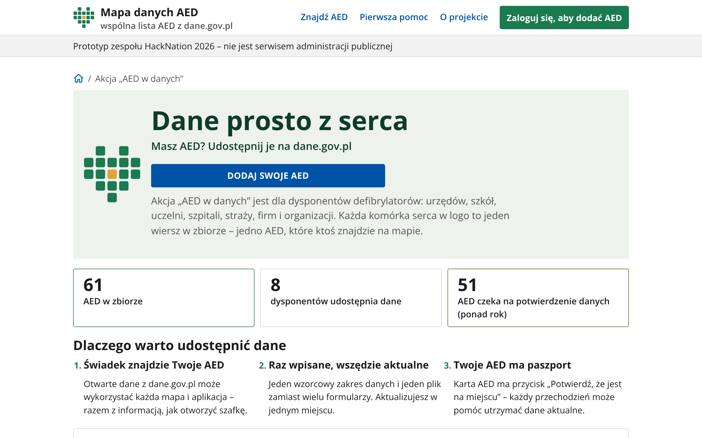

HackNation 2026 · Misja AED – dane na ratunek · zespół MKS
Wykaz AED w dane.gov.pl
Jedna lista defibrylatorów od wielu dostawców – w kodzie portalu, tak jak wykaz chronionych danych.
github.com/Serafin21/misja-aed
Problem
Za dane o AED nikt nie odpowiada
18 297
AED w OpenStreetMap – bez właściciela danych
3 219
z 18 347 AED sprawdzono w ostatnim roku
351
z 2 479 gmin bez żadnego AED w danych
Samorządy, które już publikują AED w dane.gov.pl, robią to każdy w innym układzie.
Źródło: docs/tech/LICZBY.md (OpenStreetMap, PRG – GUGiK, dane.gov.pl; 21.11.2026)
Rozwiązanie
Publikuje ten, kto odpowiada. Portal łączy.
1Dostawcawgrywa plik z 44 kolumnami w swoim zbiorze
→
2„Zawiera wykaz AED”jedno pole przy zasobie
→
3Portal sprawdzakolumny, współrzędne, TERYT
→
4Co noc„Wykaz AED – wykaz zbiorczy”
→
5API i mapa/aed-aggregated
W każdym wierszu: nazwa dostawcy i link do źródła. Wiersze różnych dostawców nie są scalane – możliwy duplikat jest tylko oznaczany.
Dowód 1 · zmiana w portalu dane.gov.pl (uruchomiony lokalnie) · zasilenie
Dostawca zaznacza „Zawiera wykaz AED” – portal sprawdza plik

Plik z błędami nie przechodzi – błędy wiersz po wierszu:

Automatycznie: harvester XML z elementem containsAedList – te same reguły · kod: portal/backend/mcod/resources/aed_*.py
Dowód 2 · zmiana w portalu dane.gov.pl · wykaz zbiorczy
Portal składa wykazy w „Wykaz AED – wykaz zbiorczy”


W każdym wierszu nazwa dostawcy i link do jego zasobu. Bez scalania – AED różnych dostawców bliżej niż 25 m mają tylko oznaczenie „Możliwy duplikat”. Ten sam mechanizm co wykaz chronionych danych (DGA): pole przy zasobie, walidacja, zadanie, /aed-aggregated.
Dowód 3 · Mapa danych AED – przykładowy odbiorca wykazu · misja-aed.onrender.com
Najbliższe AED – na komputerze i telefonie


„Znajdź AED” → Krosno: lista i mapa, godziny, dostęp, „Nawiguj” · 18 371 AED (wspólna lista + warstwa OpenStreetMap „Do sprawdzenia”)
Dowód 4 · karta AED · misja-aed.onrender.com
Przy każdym AED: kto odpowiada za dane i skąd pochodzą

Dowód 5 · dla instytucji · misja-aed.onrender.com
Instytucja dostaje instrukcję publikacji w dane.gov.pl

Akcja dla dostawców danych · misja-aed.onrender.com/akcja

Masz AED? Udostępnij je na dane.gov.pl. Każda komórka serca to jeden wiersz danych – jeden defibrylator. Logo (SVG, PNG, JPG, PDF) i księga znaku: brand/

Kroki użytkowników · ograniczenia
Kto co robi
Instytucja: szablon → plik → panel dane.gov.pl → „Zawiera wykaz AED” → poprawki z komunikatu → wiersze w wykazie zbiorczym.
Mieszkaniec: Znajdź AED → najbliższe → karta z dostawcą → Nawiguj.
Ministerstwo Cyfryzacji: nie zmienia danych; prowadzi wzorzec, wykaz zbiorczy i akcję.
Aplikacje i służby: GET /aed-aggregated → CSV/XLSX.
Ograniczenia
Zmiana w portalu działa na lokalnej kopii dane.gov.pl, nie na serwerze produkcyjnym. Dostawcy w prototypie są testowi, obok 3 prawdziwych zbiorów samorządów. Edycja AED przez administratora aplikacji to tryb pokazowy – docelowo dane zmienia tylko dostawca. Logowanie testowe (docelowo login.gov.pl).
AI: Claude – kod, testy, teksty; decyzje – zespół (docs/AI_USAGE.md).
Zespół MKS · github.com/Serafin21/misja-aed · prototyp: misja-aed.onrender.com · INSTRUKCJA_DLA_JURY.md